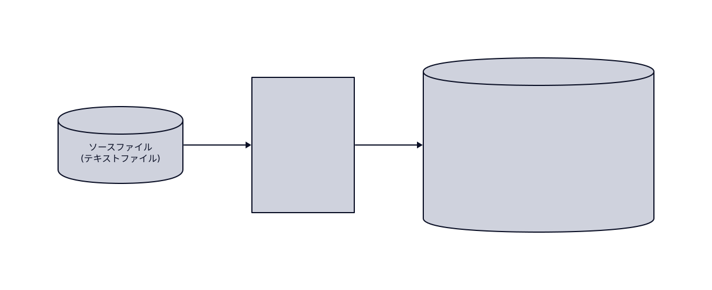

タイトルとは若干異なり、思考整理のためにシステム設計用ツールの応用を試みる、というお話になる。
このことを考えるきっかけになったのは Heritage と名付けた自分の疾患の 30 年に渡る知見をまとめたサイトを作り、それを訪問看護の看護師さんに見せたことによる。
話の成り行きでツールを教えて欲しいとの看護師さんの要望を受け取った。PlantUML と Graphviz であるとツール名は伝えたのだけれど、どうせならそれらを思考整理のためにどのように使っているのかまとめたほうが良かろうと考えた。
Heritage には PlantUML と Graphviz というソフトウェアで作成した svg フォーマットの図が描かれている。これらのソフトウェアはテキストエディタで作成したテキストファイルを画像に変換する。
画像のレイアウトはソフトウェアに任せるということになり、あまりユーザが自由自在にレイアウトできるわけではない。というよりも自由にレイアウトするのはほぼ不可能である。
システム・エンジニアやプログラマーは、システムの要件整理やシステムの最適化、システムの設計、システムの実装に重点的に時間を割り振りたいと願うようになる職能なので、仕事上では図の作成や修正などのオペレーション作業になるべく時間を取られたくないと願うことが多い。そのためソフトウェアに任せることができることは任せてしまえと考える人間が多い。筆者もその一人になる。
Photoshop などの画像編集ソフトは美しい図を作成することができる。Photoshop などの画像編集ソフトの問題は編集に時間がかかりすぎるということに尽きる。なにかを最も早く編集できるものは何かと問われたらプログラマーなら十中八九それはテキストだと答えるであろう。
そのように考える先人はたくさんいたに違いない。そのようなニーズを持つ先人たちが作り上げ今もメンテナンスを続けているのが先に述べた PlantUML や Graphviz などのツールになる。
これらのツールを使う前提として知っておかねばならないのが、ユーザはソースとなるテキストファイルを作成し、それらをツールで変換し、目的の画像を得る、というのがだいたいの作業手順となるということだ。

変換作業があるので一見手間がかかりそうな気がするかもしれない。実際には変換自体はプログラムがやるので、変換中の図を作っている本人の手間はまったくない。
それだけではなくテキストファイルの編集の過程で、思考の整理に集中できるというメリットが非常に大きい。それに伴ってさまざまなエピソードを思い出したり新しい知見が発現することすらあるので、テーマに対する知見がますます深まるという効果もある。
筆者はマインドマップや KJ 法、その他ブレインストーミングのための技法などビジネスの様々な場面で利用されているメソッドとの共通点を強く感じている。テキストファイルを利用した思考整理はエンジニア以外の人にもお勧めしたい。
テキストファイルで思考を整理するのもかなり有効ではあるが、そのテキストファイルを元に図として可視化されると、自身の思考を俯瞰するのにも非常に都合がよい。山を登ったり国内外を移動するのに地図を大きく広げて見るようなものだ。
自分自身の思考でここはおかしんじゃないか？とか、これは間違ってるなとか、ここは過剰ではないか？とか、そもそも進むべき道を間違えてるとか、そのような自身の考えの間違いや、望ましくない考えや、望ましくない考えの強度にも気が付きやすくなる。
単純化して言うなら一連の作業は思考の整理とアップデート、見える化に非常に有効だということになる。
次回は具体的にどのようなツールがあって、それぞれどのようなときに向いているのかを、不完全なものになるであろうが整理していきたいと思う。
つい先程、これはやっておきたいことを早めに終えておかないといけないかも、と思わせるできごとがあったので、その早めにやっておきたいことリストをメモしておく。できごと自体は確定ではないので確定したら公開するかもしれないし、しないかもしれない。現時点ではもしかして、という個人の予感にすぎないので伏せておく。